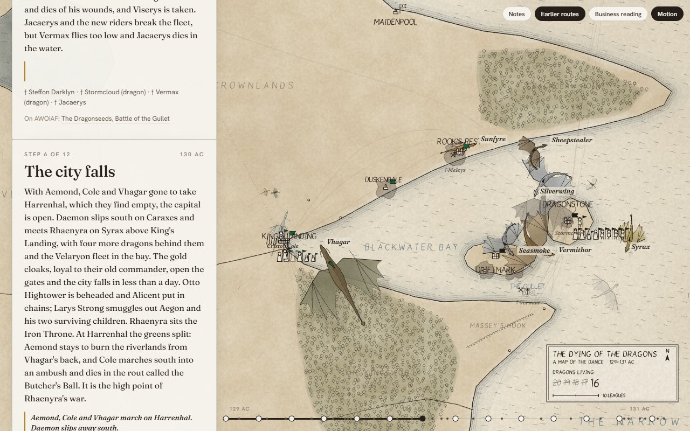
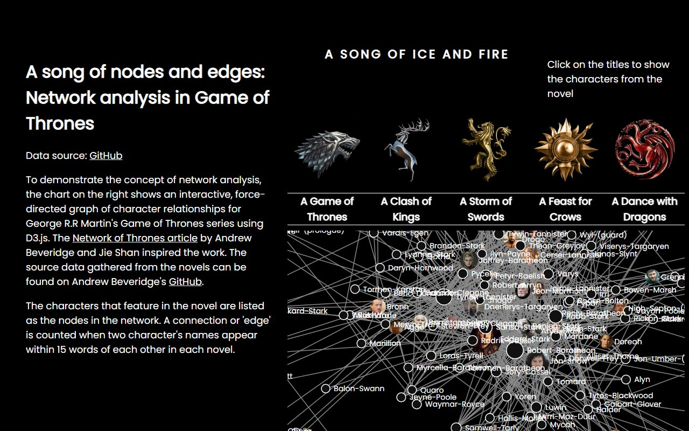

Thomas Colin / Brisbane
Data stories you can play with.
Interactive visualisations by Thomas Colin, a data scientist in Brisbane. Every piece runs in your browser, and each one comes with a short note on how it was made and a link to its code.
4 pieces, all running in your browser
All work
4 pieces

Scroll2026 / Canvas / Scrollytelling
The Dying of the Dragons
A hand-drawn, scrolling map of the Targaryen civil war, in which the sky slowly empties of dragons.

Network2019 / D3 / Network analysis
Game of Thrones networks
Who matters in A Song of Ice and Fire, as force-directed networks of the characters in all five books.
 Scroll
Scroll2025 / D3 / Scrollytelling
Every James Bond vehicle
A scrolling story of every scene Bond spends in a car, plane, boat or train, across 25 films and 60 years.
About
I'm Thomas Colin, a data scientist in Brisbane. I've spent my career turning data into things people remember, most recently at Atlassian.
Data Skunkworks is where the experiments live: each piece starts with a question and ends with something you can poke at. Lately most of them are built with AI, with me choosing the question, the data and how it should feel.
The code for every piece is on GitHub.